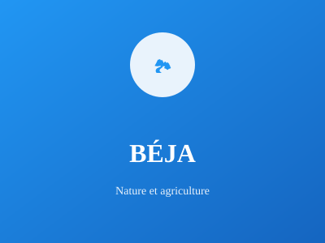

Grenier à blé de la Tunisie

Située au nord-ouest, Béja est surnommée le "Grenier à blé de la Tunisie". C'est une région agricole majeure avec des terres fertiles et une importante production céréalière depuis l'antiquité.